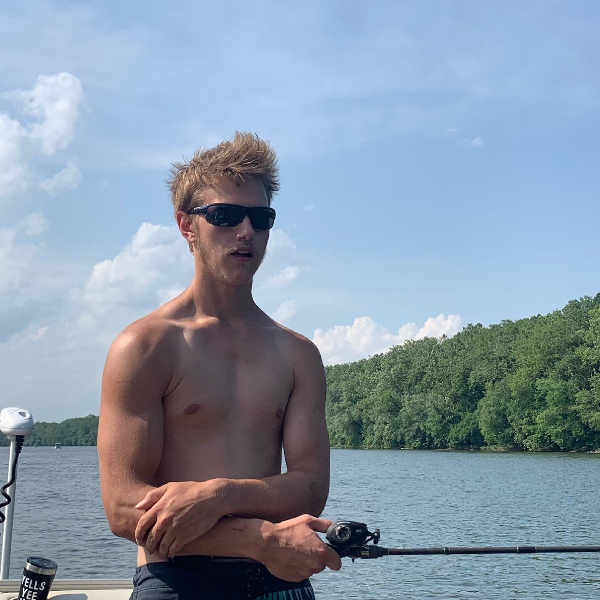

I am a software engineer looking to break into front end development. I am currently learning how to better my code in Javascript, CSS, HTMl, React, along with the library Three.JS. With my focus on these, I am still very open to picking up any other types of valuable technologies, new or old.
Zach Stoner
